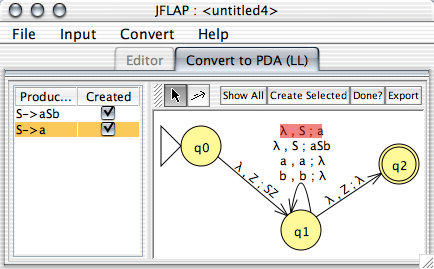

Completed LR Conversion of a Grammar

Completed LL Conversion of a Grammar
Completed LR Conversion of a Grammar
There are three options to transform a grammar to an automaton: "Convert to PDA (LL)", "Convert to PDA (LR)", and "Convert Right Linear Grammar to FA". Any restricted grammar may be transformed to a PDA by either the LL or LR algorithm, while converting a grammar to an FA requires a right-linear edu.duke.cs.jflap.grammar. Every production in a right-linear grammar has on the right hand side at most one variable, which is to the right of any terminals.
The grammar to PDA interfaces (both LL and LR) are shown above. In the LL converter, each production on the left side of the window corresponds to a loop transition on the middle state of the automaton. By selecting productions in the left hand side, if the corresponding transition has already been created it is highlighted. A small checkbox next to each productions reveals if it has been created yet.
In these sorts of converters, each production in the grammar corresponds to a transition. There is an automaton editor in which a user enters transitions normally. If the transition the user enters does not correspond to any production, she is notified and the transition is removed. Other controls are available as well:
All required transitions are added.
This will take all selected productions in the left table and add the corresponding transition.
This will check if anything remains to be done. If something remains, the user is informed. If nothing remains, the user is informed to this effect and is then allowed to export the resulting PDA.
Once all the transitions that need to be added are added, and the user has checked whether she is done yet, the user may export and use this newly built automaton with this control.